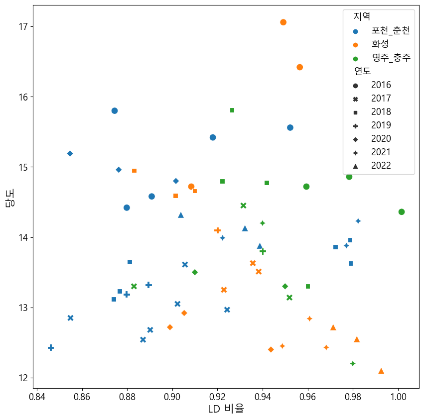
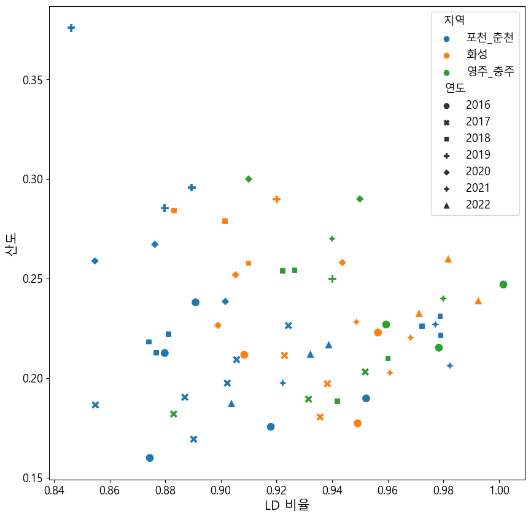
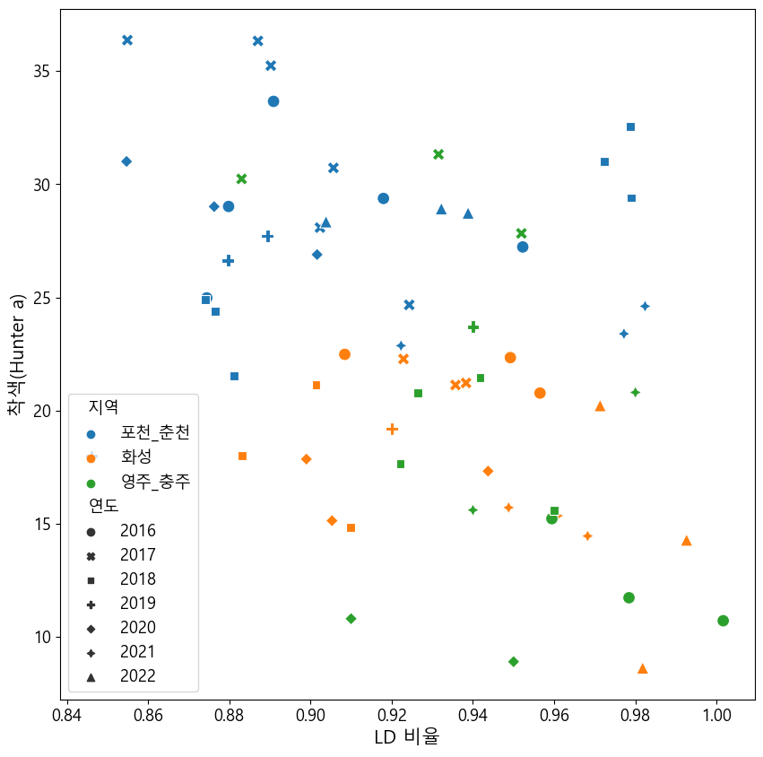
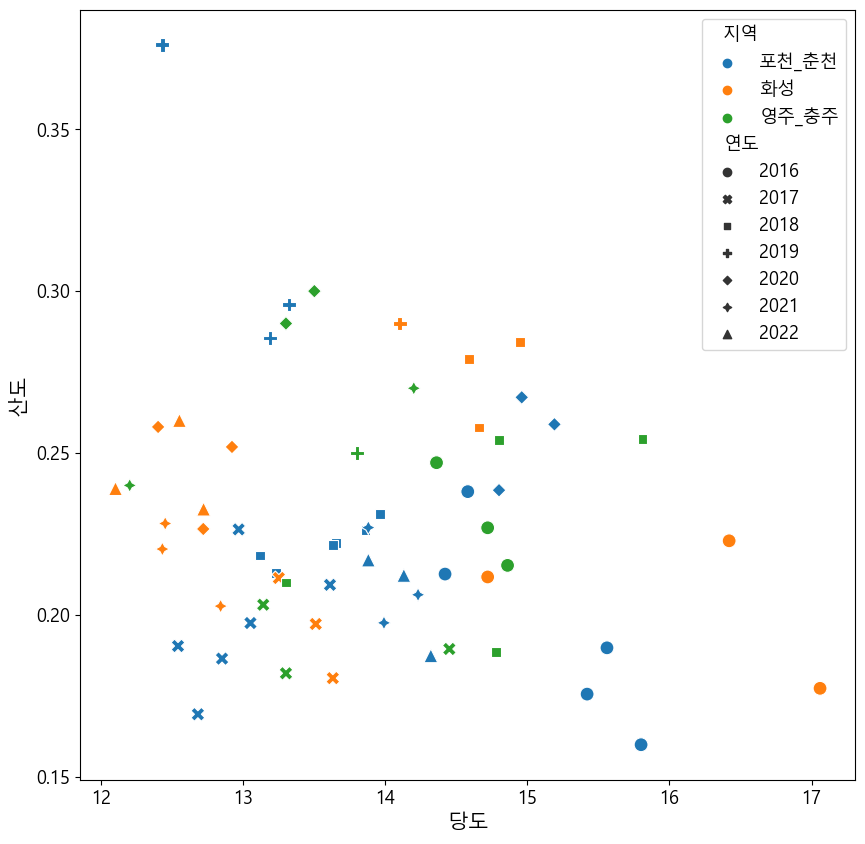
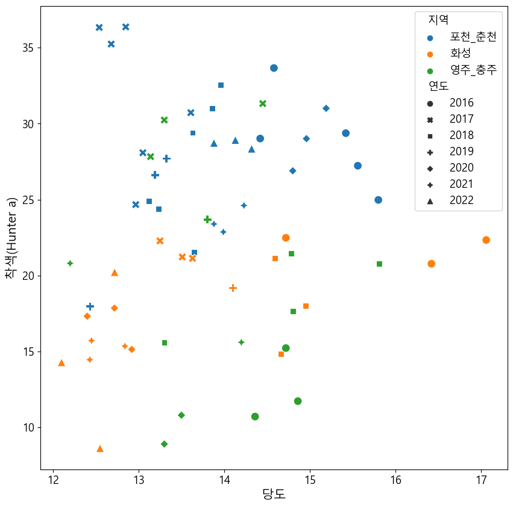
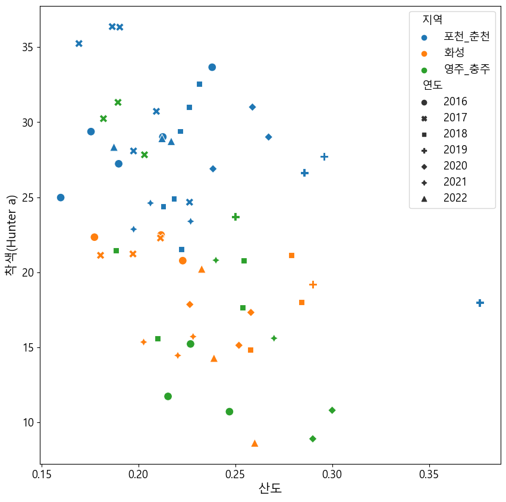

import pandas as pd
import numpy as np
import matplotlib.pyplot as plt
import seaborn as sns
from sklearn.cluster import KMeans
plt.rc('font', family = "Malgun Gothic", size = 13)
plt.rcParams['axes.unicode_minus'] = False데이터 로드
df = pd.read_excel('기상 데이터_홍로_일단위.xlsx', sheet_name = '전체')
df| 지역 | 연도 | 과중(g) | 종경(mm) | 횡경(mm) | L/D 비율 | 경도1(N/ø11mm) | 경도2(N/ø11mm) | 경도평균 | 당도(˚Brix) | 산도(%) | 착색(Hunter L) | 착색(Hunter a) | 착색(Hunter b) | Latitude | Longitude | 광역자치단체 | |
|---|---|---|---|---|---|---|---|---|---|---|---|---|---|---|---|---|---|
| 0 | 김제 | 2015 | 297.80 | 90.50 | 86.70 | 1.040000 | 36.0000 | 36.3000 | 36.20000 | 14.60 | 0.190000 | 55.2000 | 24.1000 | 24.90000 | 35.803608 | 126.880887 | 전라북도 |
| 1 | 김제 | 2016 | 270.40 | 83.10 | 87.40 | 0.950000 | 38.7000 | 38.4000 | 38.50000 | 15.30 | 0.190000 | 65.6000 | 21.0000 | 26.30000 | 35.803608 | 126.880887 | 전라북도 |
| 2 | 군위 | 2016 | 324.80 | 84.46 | 92.64 | 0.911701 | 40.8384 | 39.2750 | 40.05670 | 16.12 | 0.227353 | 65.4410 | 9.1670 | 30.54000 | 36.242835 | 128.572770 | 경상북도 |
| 3 | 군위 | 2016 | 292.00 | 81.62 | 89.04 | 0.916667 | 36.0948 | 38.8324 | 37.46360 | 16.08 | 0.194300 | 63.1970 | 13.3550 | 29.61500 | 36.242835 | 128.572770 | 경상북도 |
| 4 | 군위 | 2016 | 300.40 | 83.82 | 87.48 | 0.958162 | 41.9130 | 40.8992 | 41.40610 | 17.10 | 0.184473 | 63.8790 | 10.4040 | 29.58300 | 36.242835 | 128.572770 | 경상북도 |
| ... | ... | ... | ... | ... | ... | ... | ... | ... | ... | ... | ... | ... | ... | ... | ... | ... | ... |
| 105 | 화성 | 2022 | 361.05 | 93.28 | 95.01 | 0.981791 | 35.8674 | 39.1803 | 37.52385 | 12.55 | 0.260046 | 56.8435 | 8.6235 | 21.30845 | 37.199493 | 126.831189 | 경기도 |
| 106 | 완주 | 2022 | 246.95 | 77.41 | 81.95 | 0.944600 | 40.5872 | 36.8956 | 38.74140 | 13.39 | 0.262278 | 56.7070 | 10.8375 | 21.41050 | 35.891275 | 127.253895 | 전라북도 |
| 107 | 완주 | 2022 | 234.37 | 75.62 | 80.59 | 0.938330 | 40.1038 | 38.5360 | 39.31990 | 13.23 | 0.246774 | 54.9595 | 14.5505 | 19.75600 | 35.891275 | 127.253895 | 전라북도 |
| 108 | 완주 | 2022 | 295.45 | 80.92 | 87.13 | 0.928727 | 33.8399 | 37.3311 | 35.58550 | 13.50 | 0.264610 | 63.0900 | 4.6535 | 22.73700 | 35.891275 | 127.253895 | 전라북도 |
| 109 | 완주2 | 2022 | 291.10 | 79.30 | 87.10 | 0.910000 | 38.9000 | 37.8000 | 38.40000 | 13.40 | 0.250000 | 58.3000 | 9.4000 | 20.10000 | 35.891275 | 127.253895 | 전라북도 |
110 rows × 17 columns
포천, 춘천
df_pc = df[(df['지역'] == '포천') | (df['지역'] == '춘천')]
df_pc.columnsIndex(['지역', '연도', '과중(g)', '종경(mm)', '횡경(mm)', 'L/D 비율', '경도1(N/ø11mm)',
'경도2(N/ø11mm)', '경도평균', '당도(˚Brix)', '산도(%)', '착색(Hunter L)',
'착색(Hunter a)', '착색(Hunter b)', 'Latitude', 'Longitude', '광역자치단체'],
dtype='object')df_pc = df_pc[['지역', '광역자치단체', '연도', 'L/D 비율', '당도(˚Brix)', '산도(%)', '착색(Hunter a)']]
df_pc| 지역 | 광역자치단체 | 연도 | L/D 비율 | 당도(˚Brix) | 산도(%) | 착색(Hunter a) | |
|---|---|---|---|---|---|---|---|
| 8 | 춘천 | 강원도 | 2016 | 0.874461 | 15.800000 | 0.159907 | 24.975000 |
| 9 | 춘천 | 강원도 | 2016 | 0.917968 | 15.420000 | 0.175540 | 29.370000 |
| 10 | 춘천 | 강원도 | 2016 | 0.952263 | 15.560000 | 0.189833 | 27.226000 |
| 17 | 포천 | 경기도 | 2016 | 0.890901 | 14.580000 | 0.238073 | 33.659000 |
| 18 | 포천 | 경기도 | 2016 | 0.879838 | 14.420000 | 0.212613 | 29.016000 |
| 25 | 포천 | 경기도 | 2017 | 0.924310 | 12.966667 | 0.226406 | 24.666667 |
| 26 | 포천 | 경기도 | 2017 | 0.905650 | 13.610000 | 0.209281 | 30.719000 |
| 27 | 포천 | 경기도 | 2017 | 0.902334 | 13.050000 | 0.197489 | 28.080500 |
| 32 | 춘천 | 강원도 | 2017 | 0.890230 | 12.680000 | 0.169322 | 35.237000 |
| 33 | 춘천 | 강원도 | 2017 | 0.887056 | 12.540000 | 0.190387 | 36.330000 |
| 34 | 춘천 | 강원도 | 2017 | 0.854912 | 12.850000 | 0.186501 | 36.365500 |
| 42 | 포천 | 경기도 | 2018 | 0.874042 | 13.120000 | 0.218340 | 24.894500 |
| 43 | 포천 | 경기도 | 2018 | 0.881134 | 13.650000 | 0.222118 | 21.516500 |
| 44 | 포천 | 경기도 | 2018 | 0.876585 | 13.230000 | 0.212819 | 24.383000 |
| 52 | 춘천 | 강원도 | 2018 | 0.978982 | 13.630000 | 0.221529 | 29.399000 |
| 53 | 춘천 | 강원도 | 2018 | 0.972323 | 13.860000 | 0.226272 | 31.011000 |
| 54 | 춘천 | 강원도 | 2018 | 0.978746 | 13.960000 | 0.231284 | 32.562000 |
| 61 | 포천 | 경기도 | 2019 | 0.889412 | 13.322222 | 0.295872 | 27.708889 |
| 62 | 포천 | 경기도 | 2019 | 0.879686 | 13.187500 | 0.285571 | 26.631250 |
| 63 | 포천 | 경기도 | 2019 | 0.846087 | 12.429000 | 0.376098 | 17.973500 |
| 75 | 포천 | 경기도 | 2020 | 0.901630 | 14.800000 | 0.238507 | 26.889500 |
| 76 | 포천 | 경기도 | 2020 | 0.854719 | 15.190000 | 0.258861 | 31.004000 |
| 77 | 포천 | 경기도 | 2020 | 0.876283 | 14.960000 | 0.267196 | 29.008500 |
| 90 | 포천 | 경기도 | 2021 | 0.922293 | 13.990000 | 0.197543 | 22.865000 |
| 91 | 포천 | 경기도 | 2021 | 0.982378 | 14.230000 | 0.206226 | 24.607500 |
| 92 | 포천 | 경기도 | 2021 | 0.977181 | 13.880000 | 0.226969 | 23.389500 |
| 100 | 포천 | 경기도 | 2022 | 0.938813 | 13.880000 | 0.216959 | 28.726000 |
| 101 | 포천 | 경기도 | 2022 | 0.932221 | 14.130000 | 0.212202 | 28.917000 |
| 102 | 포천 | 경기도 | 2022 | 0.903821 | 14.320000 | 0.187386 | 28.341500 |
df_pc = df_pc.replace(['포천', '춘천'], '포천_춘천')
df_pc| 지역 | 광역자치단체 | 연도 | L/D 비율 | 당도(˚Brix) | 산도(%) | 착색(Hunter a) | |
|---|---|---|---|---|---|---|---|
| 8 | 포천_춘천 | 강원도 | 2016 | 0.874461 | 15.800000 | 0.159907 | 24.975000 |
| 9 | 포천_춘천 | 강원도 | 2016 | 0.917968 | 15.420000 | 0.175540 | 29.370000 |
| 10 | 포천_춘천 | 강원도 | 2016 | 0.952263 | 15.560000 | 0.189833 | 27.226000 |
| 17 | 포천_춘천 | 경기도 | 2016 | 0.890901 | 14.580000 | 0.238073 | 33.659000 |
| 18 | 포천_춘천 | 경기도 | 2016 | 0.879838 | 14.420000 | 0.212613 | 29.016000 |
| 25 | 포천_춘천 | 경기도 | 2017 | 0.924310 | 12.966667 | 0.226406 | 24.666667 |
| 26 | 포천_춘천 | 경기도 | 2017 | 0.905650 | 13.610000 | 0.209281 | 30.719000 |
| 27 | 포천_춘천 | 경기도 | 2017 | 0.902334 | 13.050000 | 0.197489 | 28.080500 |
| 32 | 포천_춘천 | 강원도 | 2017 | 0.890230 | 12.680000 | 0.169322 | 35.237000 |
| 33 | 포천_춘천 | 강원도 | 2017 | 0.887056 | 12.540000 | 0.190387 | 36.330000 |
| 34 | 포천_춘천 | 강원도 | 2017 | 0.854912 | 12.850000 | 0.186501 | 36.365500 |
| 42 | 포천_춘천 | 경기도 | 2018 | 0.874042 | 13.120000 | 0.218340 | 24.894500 |
| 43 | 포천_춘천 | 경기도 | 2018 | 0.881134 | 13.650000 | 0.222118 | 21.516500 |
| 44 | 포천_춘천 | 경기도 | 2018 | 0.876585 | 13.230000 | 0.212819 | 24.383000 |
| 52 | 포천_춘천 | 강원도 | 2018 | 0.978982 | 13.630000 | 0.221529 | 29.399000 |
| 53 | 포천_춘천 | 강원도 | 2018 | 0.972323 | 13.860000 | 0.226272 | 31.011000 |
| 54 | 포천_춘천 | 강원도 | 2018 | 0.978746 | 13.960000 | 0.231284 | 32.562000 |
| 61 | 포천_춘천 | 경기도 | 2019 | 0.889412 | 13.322222 | 0.295872 | 27.708889 |
| 62 | 포천_춘천 | 경기도 | 2019 | 0.879686 | 13.187500 | 0.285571 | 26.631250 |
| 63 | 포천_춘천 | 경기도 | 2019 | 0.846087 | 12.429000 | 0.376098 | 17.973500 |
| 75 | 포천_춘천 | 경기도 | 2020 | 0.901630 | 14.800000 | 0.238507 | 26.889500 |
| 76 | 포천_춘천 | 경기도 | 2020 | 0.854719 | 15.190000 | 0.258861 | 31.004000 |
| 77 | 포천_춘천 | 경기도 | 2020 | 0.876283 | 14.960000 | 0.267196 | 29.008500 |
| 90 | 포천_춘천 | 경기도 | 2021 | 0.922293 | 13.990000 | 0.197543 | 22.865000 |
| 91 | 포천_춘천 | 경기도 | 2021 | 0.982378 | 14.230000 | 0.206226 | 24.607500 |
| 92 | 포천_춘천 | 경기도 | 2021 | 0.977181 | 13.880000 | 0.226969 | 23.389500 |
| 100 | 포천_춘천 | 경기도 | 2022 | 0.938813 | 13.880000 | 0.216959 | 28.726000 |
| 101 | 포천_춘천 | 경기도 | 2022 | 0.932221 | 14.130000 | 0.212202 | 28.917000 |
| 102 | 포천_춘천 | 경기도 | 2022 | 0.903821 | 14.320000 | 0.187386 | 28.341500 |
화성
df_h = df[(df['지역'] == '화성') ]
df_h| 지역 | 연도 | 과중(g) | 종경(mm) | 횡경(mm) | L/D 비율 | 경도1(N/ø11mm) | 경도2(N/ø11mm) | 경도평균 | 당도(˚Brix) | 산도(%) | 착색(Hunter L) | 착색(Hunter a) | 착색(Hunter b) | Latitude | Longitude | 광역자치단체 | |
|---|---|---|---|---|---|---|---|---|---|---|---|---|---|---|---|---|---|
| 14 | 화성 | 2016 | 365.400 | 89.74 | 93.82 | 0.956512 | 39.888200 | 40.7944 | 40.34130 | 16.420 | 0.222887 | 57.26600 | 20.7710 | 26.01400 | 37.199493 | 126.831189 | 경기도 |
| 15 | 화성 | 2016 | 256.500 | 76.40 | 84.10 | 0.908442 | 42.245400 | 43.4784 | 42.86190 | 14.720 | 0.211720 | 57.69700 | 22.4810 | 28.08700 | 37.199493 | 126.831189 | 경기도 |
| 16 | 화성 | 2016 | 347.000 | 86.72 | 91.36 | 0.949212 | 36.712200 | 37.8886 | 37.30040 | 17.060 | 0.177327 | 53.48400 | 22.3350 | 26.05400 | 37.199493 | 126.831189 | 경기도 |
| 28 | 화성 | 2017 | 323.300 | 86.61 | 92.56 | 0.935717 | 36.403000 | 39.0612 | 37.80530 | 13.630 | 0.180471 | 59.45850 | 21.1265 | 27.31050 | 37.199493 | 126.831189 | 경기도 |
| 29 | 화성 | 2017 | 327.000 | 86.23 | 91.90 | 0.938303 | 35.893300 | 34.5208 | 35.20705 | 13.510 | 0.197194 | 58.79050 | 21.2180 | 27.28000 | 37.199493 | 126.831189 | 경기도 |
| 30 | 화성 | 2017 | 308.800 | 83.55 | 90.53 | 0.922898 | 38.768000 | 38.8623 | 38.83320 | 13.250 | 0.211398 | 57.15350 | 22.2770 | 26.41950 | 37.199493 | 126.831189 | 경기도 |
| 45 | 화성 | 2018 | 291.150 | 80.89 | 91.60 | 0.883079 | 36.325500 | 38.8191 | 37.57230 | 14.950 | 0.284281 | 60.57300 | 17.9945 | 29.82850 | 37.199493 | 126.831189 | 경기도 |
| 46 | 화성 | 2018 | 326.600 | 83.89 | 93.07 | 0.901365 | 36.707600 | 38.7898 | 37.74870 | 14.590 | 0.278975 | 58.11325 | 21.1320 | 29.38250 | 37.199493 | 126.831189 | 경기도 |
| 47 | 화성 | 2018 | 291.450 | 82.70 | 90.89 | 0.909891 | 35.758444 | 34.1662 | 34.84695 | 14.660 | 0.257883 | 63.85950 | 14.8280 | 31.26700 | 37.199493 | 126.831189 | 경기도 |
| 64 | 화성 | 2019 | 402.800 | 85.80 | 93.40 | 0.920000 | 37.700000 | 38.4000 | 38.10000 | 14.100 | 0.290000 | 52.20000 | 19.2000 | 19.40000 | 37.199493 | 126.831189 | 경기도 |
| 78 | 화성 | 2020 | 336.950 | 87.04 | 92.23 | 0.943728 | 32.494400 | 34.9256 | 33.71000 | 12.400 | 0.258057 | 49.49350 | 17.3205 | 19.25450 | 37.199493 | 126.831189 | 경기도 |
| 79 | 화성 | 2020 | 305.200 | 81.43 | 90.58 | 0.898984 | 32.193300 | 33.4437 | 32.81850 | 12.718 | 0.226540 | 48.13150 | 17.8520 | 18.69650 | 37.199493 | 126.831189 | 경기도 |
| 80 | 화성 | 2020 | 291.600 | 80.30 | 88.70 | 0.905299 | 34.163300 | 33.5160 | 33.83965 | 12.920 | 0.251880 | 51.37150 | 15.1310 | 20.08500 | 37.199493 | 126.831189 | 경기도 |
| 93 | 화성 | 2021 | 343.500 | 90.23 | 95.10 | 0.948791 | 36.682100 | 36.6862 | 36.68415 | 12.450 | 0.228229 | 54.32950 | 15.7115 | 19.75950 | 37.199493 | 126.831189 | 경기도 |
| 94 | 화성 | 2021 | 302.950 | 86.16 | 89.67 | 0.960856 | 38.817000 | 39.6425 | 39.22975 | 12.840 | 0.202715 | 55.71150 | 15.3465 | 19.89800 | 37.199493 | 126.831189 | 경기도 |
| 95 | 화성 | 2021 | 325.650 | 88.72 | 91.63 | 0.968242 | 38.863300 | 37.4333 | 38.14830 | 12.430 | 0.220336 | 56.18250 | 14.4535 | 20.19650 | 37.199493 | 126.831189 | 경기도 |
| 103 | 화성 | 2022 | 349.554 | 91.08 | 93.77 | 0.971313 | 36.601900 | 38.4526 | 37.52725 | 12.720 | 0.232678 | 51.52500 | 20.2195 | 18.76650 | 37.199493 | 126.831189 | 경기도 |
| 104 | 화성 | 2022 | 364.150 | 93.93 | 94.63 | 0.992603 | 36.680000 | 37.0889 | 36.88445 | 12.100 | 0.239016 | 53.92050 | 14.2790 | 20.12500 | 37.199493 | 126.831189 | 경기도 |
| 105 | 화성 | 2022 | 361.050 | 93.28 | 95.01 | 0.981791 | 35.867400 | 39.1803 | 37.52385 | 12.550 | 0.260046 | 56.84350 | 8.6235 | 21.30845 | 37.199493 | 126.831189 | 경기도 |
df_h = df_h[['지역', '광역자치단체', '연도', 'L/D 비율', '당도(˚Brix)', '산도(%)', '착색(Hunter a)']]
df_h| 지역 | 광역자치단체 | 연도 | L/D 비율 | 당도(˚Brix) | 산도(%) | 착색(Hunter a) | |
|---|---|---|---|---|---|---|---|
| 14 | 화성 | 경기도 | 2016 | 0.956512 | 16.420 | 0.222887 | 20.7710 |
| 15 | 화성 | 경기도 | 2016 | 0.908442 | 14.720 | 0.211720 | 22.4810 |
| 16 | 화성 | 경기도 | 2016 | 0.949212 | 17.060 | 0.177327 | 22.3350 |
| 28 | 화성 | 경기도 | 2017 | 0.935717 | 13.630 | 0.180471 | 21.1265 |
| 29 | 화성 | 경기도 | 2017 | 0.938303 | 13.510 | 0.197194 | 21.2180 |
| 30 | 화성 | 경기도 | 2017 | 0.922898 | 13.250 | 0.211398 | 22.2770 |
| 45 | 화성 | 경기도 | 2018 | 0.883079 | 14.950 | 0.284281 | 17.9945 |
| 46 | 화성 | 경기도 | 2018 | 0.901365 | 14.590 | 0.278975 | 21.1320 |
| 47 | 화성 | 경기도 | 2018 | 0.909891 | 14.660 | 0.257883 | 14.8280 |
| 64 | 화성 | 경기도 | 2019 | 0.920000 | 14.100 | 0.290000 | 19.2000 |
| 78 | 화성 | 경기도 | 2020 | 0.943728 | 12.400 | 0.258057 | 17.3205 |
| 79 | 화성 | 경기도 | 2020 | 0.898984 | 12.718 | 0.226540 | 17.8520 |
| 80 | 화성 | 경기도 | 2020 | 0.905299 | 12.920 | 0.251880 | 15.1310 |
| 93 | 화성 | 경기도 | 2021 | 0.948791 | 12.450 | 0.228229 | 15.7115 |
| 94 | 화성 | 경기도 | 2021 | 0.960856 | 12.840 | 0.202715 | 15.3465 |
| 95 | 화성 | 경기도 | 2021 | 0.968242 | 12.430 | 0.220336 | 14.4535 |
| 103 | 화성 | 경기도 | 2022 | 0.971313 | 12.720 | 0.232678 | 20.2195 |
| 104 | 화성 | 경기도 | 2022 | 0.992603 | 12.100 | 0.239016 | 14.2790 |
| 105 | 화성 | 경기도 | 2022 | 0.981791 | 12.550 | 0.260046 | 8.6235 |
영주, 충주
df_yc = df[(df['지역'] == '영주') | (df['지역'] == '충주')]
df_yc = df_yc[['지역', '광역자치단체', '연도', 'L/D 비율', '당도(˚Brix)', '산도(%)', '착색(Hunter a)']]
df_yc = df_yc.replace(['영주', '충주'], '영주_충주')
df_yc| 지역 | 광역자치단체 | 연도 | L/D 비율 | 당도(˚Brix) | 산도(%) | 착색(Hunter a) | |
|---|---|---|---|---|---|---|---|
| 11 | 영주_충주 | 충청북도 | 2016 | 0.978422 | 14.860 | 0.215293 | 11.7260 |
| 12 | 영주_충주 | 충청북도 | 2016 | 0.959439 | 14.720 | 0.226907 | 15.2200 |
| 13 | 영주_충주 | 충청북도 | 2016 | 1.001623 | 14.360 | 0.247007 | 10.7100 |
| 22 | 영주_충주 | 충청북도 | 2017 | 0.951937 | 13.140 | 0.203144 | 27.8255 |
| 23 | 영주_충주 | 충청북도 | 2017 | 0.883037 | 13.300 | 0.181972 | 30.2340 |
| 24 | 영주_충주 | 충청북도 | 2017 | 0.931521 | 14.450 | 0.189476 | 31.3180 |
| 38 | 영주_충주 | 경상북도 | 2018 | 0.960000 | 13.300 | 0.210000 | 15.6000 |
| 39 | 영주_충주 | 충청북도 | 2018 | 0.922140 | 14.800 | 0.253903 | 17.6335 |
| 40 | 영주_충주 | 충청북도 | 2018 | 0.926436 | 15.810 | 0.254278 | 20.7715 |
| 41 | 영주_충주 | 충청북도 | 2018 | 0.941777 | 14.779 | 0.188511 | 21.4395 |
| 58 | 영주_충주 | 경상북도 | 2019 | 0.940000 | 13.800 | 0.250000 | 23.7000 |
| 71 | 영주_충주 | 경상북도 | 2020 | 0.910000 | 13.500 | 0.300000 | 10.8000 |
| 74 | 영주_충주 | 충청북도 | 2020 | 0.950000 | 13.300 | 0.290000 | 8.9000 |
| 86 | 영주_충주 | 경상북도 | 2021 | 0.980000 | 12.200 | 0.240000 | 20.8000 |
| 89 | 영주_충주 | 충청북도 | 2021 | 0.940000 | 14.200 | 0.270000 | 15.6000 |
김제, 완주
# df_kw = df[(df['지역'] == '김제') | (df['지역'] == '완주') | (df['지역'] == '완주2')]
# df_kw = df_kw[['지역', '광역자치단체', '연도', 'L/D 비율', '당도(˚Brix)', '산도(%)', '착색(Hunter a)']]
# df_kw = df_kw.replace(['김제', '완주', '완주2'], '김제_완주')
# df_kwdf2 = pd.concat([df_pc, df_h, df_yc], ignore_index = True)
df2| 지역 | 광역자치단체 | 연도 | L/D 비율 | 당도(˚Brix) | 산도(%) | 착색(Hunter a) | |
|---|---|---|---|---|---|---|---|
| 0 | 포천_춘천 | 강원도 | 2016 | 0.874461 | 15.80 | 0.159907 | 24.975 |
| 1 | 포천_춘천 | 강원도 | 2016 | 0.917968 | 15.42 | 0.175540 | 29.370 |
| 2 | 포천_춘천 | 강원도 | 2016 | 0.952263 | 15.56 | 0.189833 | 27.226 |
| 3 | 포천_춘천 | 경기도 | 2016 | 0.890901 | 14.58 | 0.238073 | 33.659 |
| 4 | 포천_춘천 | 경기도 | 2016 | 0.879838 | 14.42 | 0.212613 | 29.016 |
| ... | ... | ... | ... | ... | ... | ... | ... |
| 58 | 영주_충주 | 경상북도 | 2019 | 0.940000 | 13.80 | 0.250000 | 23.700 |
| 59 | 영주_충주 | 경상북도 | 2020 | 0.910000 | 13.50 | 0.300000 | 10.800 |
| 60 | 영주_충주 | 충청북도 | 2020 | 0.950000 | 13.30 | 0.290000 | 8.900 |
| 61 | 영주_충주 | 경상북도 | 2021 | 0.980000 | 12.20 | 0.240000 | 20.800 |
| 62 | 영주_충주 | 충청북도 | 2021 | 0.940000 | 14.20 | 0.270000 | 15.600 |
63 rows × 7 columns
df2.columns = ['지역', '광역자치단체', '연도', 'LD 비율', '당도', '산도', '착색(Hunter a)']
df2| 지역 | 광역자치단체 | 연도 | LD 비율 | 당도 | 산도 | 착색(Hunter a) | |
|---|---|---|---|---|---|---|---|
| 0 | 포천_춘천 | 강원도 | 2016 | 0.874461 | 15.80 | 0.159907 | 24.975 |
| 1 | 포천_춘천 | 강원도 | 2016 | 0.917968 | 15.42 | 0.175540 | 29.370 |
| 2 | 포천_춘천 | 강원도 | 2016 | 0.952263 | 15.56 | 0.189833 | 27.226 |
| 3 | 포천_춘천 | 경기도 | 2016 | 0.890901 | 14.58 | 0.238073 | 33.659 |
| 4 | 포천_춘천 | 경기도 | 2016 | 0.879838 | 14.42 | 0.212613 | 29.016 |
| ... | ... | ... | ... | ... | ... | ... | ... |
| 58 | 영주_충주 | 경상북도 | 2019 | 0.940000 | 13.80 | 0.250000 | 23.700 |
| 59 | 영주_충주 | 경상북도 | 2020 | 0.910000 | 13.50 | 0.300000 | 10.800 |
| 60 | 영주_충주 | 충청북도 | 2020 | 0.950000 | 13.30 | 0.290000 | 8.900 |
| 61 | 영주_충주 | 경상북도 | 2021 | 0.980000 | 12.20 | 0.240000 | 20.800 |
| 62 | 영주_충주 | 충청북도 | 2021 | 0.940000 | 14.20 | 0.270000 | 15.600 |
63 rows × 7 columns
data = df2.loc[:, 'LD 비율':]
data| LD 비율 | 당도 | 산도 | 착색(Hunter a) | |
|---|---|---|---|---|
| 0 | 0.874461 | 15.80 | 0.159907 | 24.975 |
| 1 | 0.917968 | 15.42 | 0.175540 | 29.370 |
| 2 | 0.952263 | 15.56 | 0.189833 | 27.226 |
| 3 | 0.890901 | 14.58 | 0.238073 | 33.659 |
| 4 | 0.879838 | 14.42 | 0.212613 | 29.016 |
| ... | ... | ... | ... | ... |
| 58 | 0.940000 | 13.80 | 0.250000 | 23.700 |
| 59 | 0.910000 | 13.50 | 0.300000 | 10.800 |
| 60 | 0.950000 | 13.30 | 0.290000 | 8.900 |
| 61 | 0.980000 | 12.20 | 0.240000 | 20.800 |
| 62 | 0.940000 | 14.20 | 0.270000 | 15.600 |
63 rows × 4 columns
data_list = list(data.columns)
for col in data.columns:
Kmean = KMeans(n_clusters = 3)
data_list.remove(col)
for col2 in data_list:
pred = Kmean.fit_predict(data[[f'{col}', f'{col2}']])
# center = Kmean.cluster_centers_
plt.figure(figsize = (10, 10))
sns.scatterplot(data = df2, x = f'{col}', y = f'{col2}',
hue = '지역', style = '연도', s = 100, palette = "tab10")
# plt.scatter(x = center[:, 0], y = center[:,1], c = 'yellow', edgecolor = 'black', s = 120,)
plt.xlabel(f'{col}', fontsize = 15)
plt.ylabel(f'{col2}', fontsize = 15)
plt.savefig(f'./3개 결과/{col}_{col2}_2')
plt.show()





data_list = list(data.columns)
for col in data.columns:
data_list.remove(col)
for col2 in data_list:
plt.figure(figsize = (10, 10))
sns.scatterplot(data = df2, x = f'{col}', y = f'{col2}',
hue = '지역', style = '연도', s = 100, palette = "tab10")
plt.xlabel(f'{col}', fontsize = 15)
plt.ylabel(f'{col2}', fontsize = 15)
# plt.savefig(f'./3개 결과/{col}_{col2}_2')
plt.show()import matplotlib.pyplot as plt
import matplotlib.patches as patches
col = '당도'
col2 = '착색(Hunter a)'
fig, ax = plt.subplots()
rect
for (x, y, w, h) in rect:
ax.add_patch(
patches.Recto\nagle(
(x, y), w, h,
))